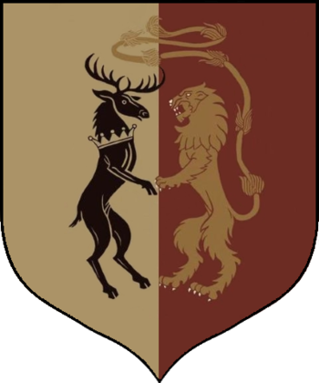
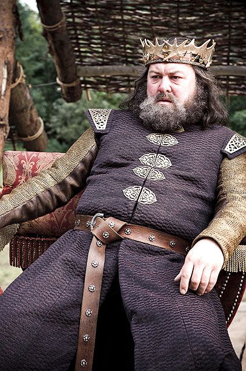

| Ruling House | Sigil |
|---|---|
| Baratheon |  |
| Ruler | |
|---|---|
| Robert Baratheon, King of the Andals and the First Men, Lord of the Seven Kingdoms and Protectors of the Realm |  |
| Info | |
|---|---|
| Capital | King's Landing |
| Geography | Plains and river valleys, with forests in the south and in Crackclaw Point to the north; temperate/Mediterranean climate on the coast around King's Landing |
| Bastard Surname | "Waters" |
| Other Notable Houses |
|
| House Baratheon | |
|---|---|
| Words | "Ours Is the Fury" |
| Family members |
|